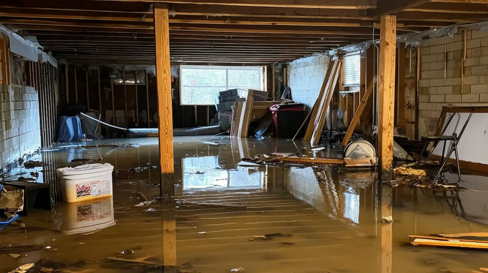
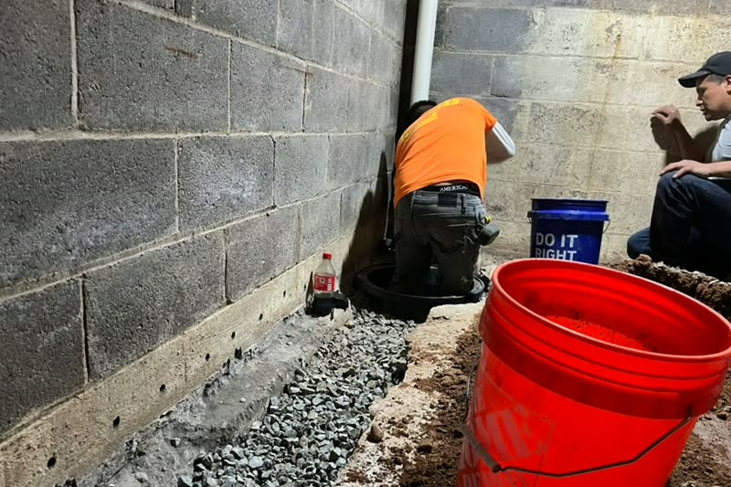
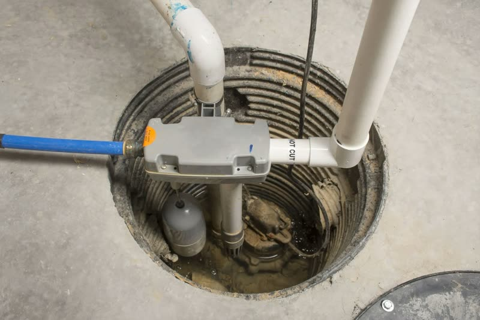
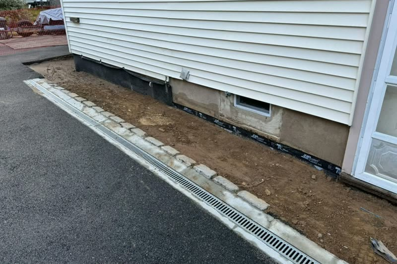
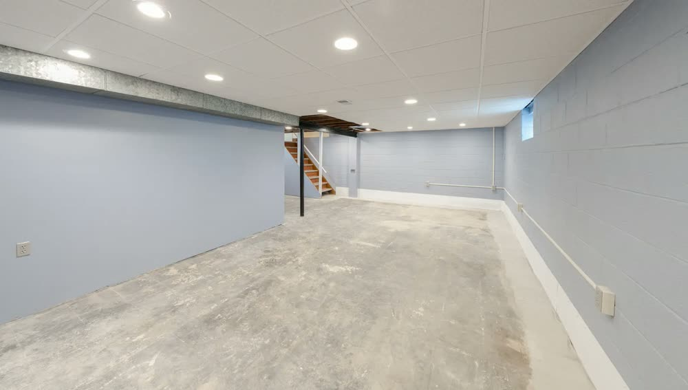
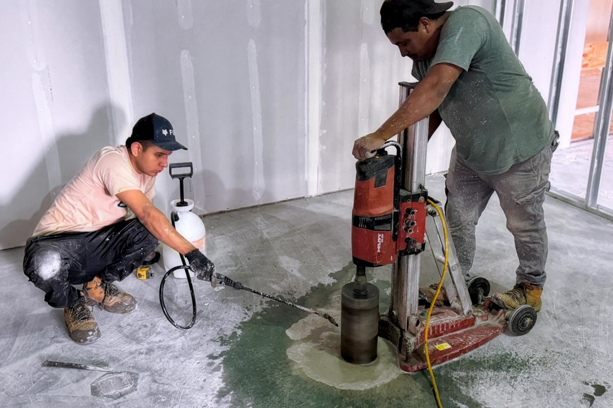

Waterproofing & Basement
Basement WaterproofingFoundation Waterproofing Interior French DrainsExterior French Drains Channel DrainsCrawlspace Encapsulation Sump PumpsWindow Wells & Egress WindowsOutdoor Services
Retaining WallsPatios & Pavers Driveway & WalkwayMasonryAreas We Serve
West CaldwellLivingstonMontclair North CaldwellShort HillsSouth Orange SummitVeronaWayneWest OrangeMore
GalleryReviewsAboutContactThe water is already moving. The question is where it goes next.
ARD Waterproofing dispatches from West Caldwell across West Essex, Union, Passaic, and Morris Counties. Owner David Roth personally evaluates every property before anything is recommended.
Free estimate, free drainage design, and a quote that holds.
You will hear back within the hour. David Roth schedules a personal site visit, usually the next day, walks the property, and identifies where the water is entering and why. The inspection determines the recommendation, and the recommendation is what the job actually needs.
ARD honors its original quote even when a job turns out more complex than expected. That is the point of inspecting thoroughly before pricing.

New Jersey basements flood for reasons a sealant cannot reach.
Clay-heavy soil, a high water table in low-lying areas, and intense Northeast storm systems create hydrostatic pressure conditions that standard sealants cannot address long term. The soil profiles across Essex, Passaic, and Morris Counties vary enough that the same symptom has different causes.
Near the Passaic River flood zones
In Wayne and Little Falls the water table rises sharply after sustained rainfall, pushing water through concrete pores and the wall-floor joint before most homeowners realize what is happening.
On the hillier Morris County terrain
Around Parsippany-Troy Hills and Morristown, surface runoff concentrates along foundation walls during heavy storms, overwhelming gutters and grading that worked fine for decades.
Through repeated freeze and thaw
Saturated soil freezes, expands against the concrete, thaws, and repeats. Over seasons that movement widens pores in poured concrete and causes horizontal cracking in block walls. Seepage becomes structural movement.
Interior, exterior, or sump. The inspection decides, not a package.
New Jersey homeowners often get conflicting advice, because some companies default to whichever system they prefer to install rather than diagnosing which problem exists. Here is how the three actually differ.
Interior French drains
They intercept water that has already reached the foundation perimeter and channel it to a sump pit before it spreads across the floor, relieving hydrostatic pressure from the inside. Highly effective near the Passaic River flood zones where the water table rises faster than exterior drainage can redirect. A channel is cut along the interior perimeter, perforated pipe is laid in aggregate, and it connects to a properly sized sump. Installations are typically completed in a single day.

Exterior French drains and foundation trenching
These address the problem before water reaches the wall, with excavation around the perimeter, proper grading, and correctly sized aggregate and pipe carrying runoff away. For Morris County properties on hillier terrain this is often the most direct fix. The tradeoff is disruption, which is why the crew rebuilds and restores any landscaping or hardscaping disturbed.
Sump pump systems
The last line of defense in any interior setup. A single standard pump without a battery backup is a liability in New Jersey, where the storms that cause flooding are the storms that knock out power. ARD sizes every system for the actual drainage volume of your pit rather than fitting a default unit, and includes battery backup.

Everything else on the foundation
Foundation waterproofing, crawlspace encapsulation and vapor barriers for the condensation and seepage combination Northeast summers create, channel drains, and window wells with egress windows.
Basement Waterproofing
The anchor service, diagnosed before it is priced.
Foundation Waterproofing
Membrane and drainage on the structure itself.
Channel Drains
Surface water intercepted before it pools.
Crawlspace Encapsulation
Vapor barrier for high-humidity crawl spaces.
Window Wells & Egress
Drainage and code-compliant egress windows.
Retaining Walls
Outdoor structural work and grade control.
Patios & Pavers
Hardscaping, rebuilt neatly after any dig.
Driveway, Walkway & Masonry
The rest of the outdoor service list.
Excellent, based on 180 Google reviews.
Had a pretty urgent need for an interior French drain and called up David. He came out within 24 hours, had a detailed estimate for me that evening that didn't just explain what they were going to do but why it was required, and ARD completed the job shortly after that. The lifetime warranty made me feel extra confident that they knew what they were doing.
We worked with the ARD Waterproofing Company to install French Drains and a sump pump when our basement flooded numerous times. ARD was extremely helpful, professional and efficient. The project was completed in the time promised and we are happy with the results.
We had a fantastic experience with David and his team. From start to finish, they were organized, responsive, and incredibly clean. The entire process was much smoother than we expected, and they kept us informed every step of the way. We would highly recommend them to anyone in need of a French drain system!
ARD Waterproofing did an amazing job completely revamping our previous sump pump system and drainage. They had incredible attention to detail, were very responsive, and made sure everything was 100% perfect and to our liking.
I had a fantastic experience with David. He was honest from the start. He and his team were efficient and did a great job! I am very appreciative, and would absolutely recommend him to anyone needing his services.
We had a great experience with David and his team. They went above and beyond to ensure we were happy with the yard drainage work and sod installation. Even with the heat wave, the team wanted to work and complete the job in a timely manner.
Licensed, insured, and locally based.
ARD Waterproofing holds NJ HIC License #13VH12460700, issued by the New Jersey Division of Consumer Affairs. New Jersey law requires any company performing home improvement work to be registered, and you can verify a license directly through the Division. Permits are pulled before work begins and installations meet local building code for your county.
David Roth founded ARD in 2015 after more than 20 years working specifically in foundation waterproofing and drainage, not as a side service inside a general building business.



Dispatching from West Caldwell across three counties.
Crews work the Bloomfield Avenue corridor around West Caldwell and Caldwell, the Wayne and Little Falls neighborhoods bordering the Passaic River flood zones, the Parsippany-Troy Hills districts, and the streets around the historic Morristown Green.
Waterproofing in New Jersey
How can I tell if the water is coming from a rising water table or poor surface drainage?
Why do some companies recommend interior drains while others insist on exterior excavation?
What happens if hydrostatic pressure is left untreated through freeze-thaw cycles?
How do you size a sump pump for a home in a known flood zone?
How quickly can ARD reach my home, and are there travel fees?
What hidden costs should New Jersey homeowners watch for in an estimate?
Waterproofing & Basement
Basement WaterproofingFoundation Waterproofing Interior French DrainsExterior French Drains Channel DrainsCrawlspace Encapsulation Sump PumpsWindow Wells & Egress WindowsOutdoor Services
Retaining WallsPatios & Pavers Driveway & WalkwayMasonryAreas We Serve
West CaldwellLivingstonMontclair North CaldwellShort HillsSouth Orange SummitVeronaWayneWest OrangeMore
GalleryReviewsAboutContact
Dry basement, or we have not finished the job.
ARD Waterproofing dispatches from West Caldwell to serve homeowners across West Essex, Union, Passaic, and Morris Counties. Owner David Roth inspects and prices every property himself.
We handle interior french drains, sump pumps, foundation waterproofing and nine more services across New Jersey.
- Same-day emergency service
- 100% lifetime guarantee
- NJ licensed and insured
- 12% military and first responder discount
Excellent, based on 180 Google reviews.
ARD is not a franchise routing leads through a call center. It is a New Jersey outfit, founded in 2015, whose owner still shows up to look at your foundation.
He came out within 24 hours, had a detailed estimate for me that evening that didn't just explain what they were going to do but why it was required. The lifetime warranty made me feel extra confident that they knew what they were doing. David checked in a couple of times during the job and his foreman Alex kept me informed.
We worked with the ARD Waterproofing Company to install French Drains and a sump pump when our basement flooded numerous times. ARD was extremely helpful, professional and efficient. The project was completed in the time promised and we are happy with the results.
Everything went incredibly well. Men who worked on the job were skilled and respectable. The owner of the company was easy to deal with, honest, personable. I recommend 100%.
Water does not stop at the wall. It waits.
Clay-heavy soil, a high water table in low-lying areas, and Northeast storm systems create hydrostatic pressure that standard sealants cannot address long term.
- Water along the wall-floor joint after sustained rainfall
- A chalky white line on the block where water sat
- A sump pump cycling when it has not rained in a week
- Musty air upstairs that no dehumidifier fixes
- Grading and gutters feeding runoff toward the foundation
- Horizontal cracking in block walls after repeated freeze and thaw
Get a real number before you commit to anything.
Free estimate, free drainage design and advice, free consultation. Price matching available, and the quote is honored even when the job turns out more complex.
Interior, exterior, or sump. The inspection decides.
Conflicting advice usually reflects a company's preferred product, not your home's drainage profile. These three solve different root causes.
Basement Waterproofing
The anchor service, diagnosed before it is priced.
Foundation Waterproofing
Membrane and drainage on the structure itself.
Crawlspace Encapsulation
Vapor barrier for high-humidity crawl spaces.
Channel Drains
Surface water intercepted before it pools.
Window Wells & Egress
Drainage plus code-compliant egress windows.
Retaining Walls
Outdoor structural work and grade control.
Patios & Pavers
Hardscaping, rebuilt neatly after any excavation.
Driveway, Walkway & Masonry
The rest of the outdoor service list.
From the first call to the final cleanup.
You hear back within the hour
Call or text any time. ARD is open 24 hours for active flooding.
David Roth visits, usually next day
He walks the property, assesses where water enters, and identifies the root cause.
The inspection sets the scope
Hydrostatic pressure, failed grading, an undersized pump, or a combination. The recommendation is what the job needs.
The crew works and cleans up
Interior drains often finish in a day. Patio sections are rebuilt if disturbed and the site is left neat.

Excavation is the honest part of this trade.
ARD holds NJ HIC License #13VH12460700 from the New Jersey Division of Consumer Affairs. Permits are pulled before work begins and every installation meets local building code for your county.
David Roth founded ARD in 2015 after more than 20 years focused solely on foundation waterproofing and drainage.
See recent jobsWrite to us, call or text to get your estimate.
Free estimate, free drainage design and advice, and a free consultation. ARD is open 24 hours for emergency basement flooding across Passaic, Morris, Union, and West Essex Counties.
Dashed towns are served but do not have a page yet. See all service areas.
Waterproofing in New Jersey
Rising water table, or poor surface drainage?
Why do companies disagree on interior versus exterior?
What if hydrostatic pressure is left untreated?
How is a sump pump sized for a flood zone?
How fast can you reach me, and are there travel fees?
What hidden costs should I watch for?
Waterproofing & Basement
Basement WaterproofingFoundation Waterproofing Interior French DrainsExterior French Drains Channel DrainsCrawlspace Encapsulation Sump PumpsWindow Wells & Egress WindowsOutdoor Services
Retaining WallsPatios & Pavers Driveway & WalkwayMasonryAreas We Serve
West CaldwellLivingstonMontclair North CaldwellShort HillsSouth Orange SummitVeronaWayneWest OrangeMore
GalleryReviewsAboutContactEvery wet basement has a route. We find it first.
No two foundations leak the same way, so ARD Waterproofing does not quote from a photo. Owner David Roth reads the grade, the gutters, and the water line on site, then writes the scope.
Request a free estimate
We will get back to you the same business day.
Prefer to call? (917) 691-8411
It starts outside, long before you see it inside.
Clay-heavy soil, a high water table in low-lying areas, and intense Northeast storm systems create hydrostatic pressure that standard sealants cannot address long term. What you eventually notice inside is the last step of a process that began at the downspout.
Water collects at the footing
Soil beside the house holds it. Near the Passaic River flood zones in Wayne and Little Falls the water table rises sharply after sustained rainfall.
It finds the weak joint
Usually the cove where wall meets floor, a tie rod hole, or a crack that opened as the house settled. On hillier Morris County terrain, surface runoff concentrates along the wall instead.
The block starts wicking
Hollow block fills and moisture travels upward, leaving the chalky white line most homeowners spot first.
Freeze and thaw widen it
Saturated soil freezes, expands against the concrete, thaws, and repeats. Over seasons, seepage becomes horizontal cracking and then structural movement.
Three ways to break that sequence.
Interior French Drains
Intercept water at the footing inside and carry it to a sump, relieving hydrostatic pressure. Often finished in a single day.
Exterior French Drains
Excavate to the footing, grade properly, carry runoff away before it reaches the wall. Landscaping restored after.
Sump Pump Systems
Sized to your pit's actual volume, never a default unit, and always with battery backup.
Basement Waterproofing
The anchor service, diagnosed before it is priced.
Foundation Waterproofing
Membrane and drainage on the structure itself.
Crawlspace Encapsulation
Vapor barrier for high-humidity crawl spaces.
Channel Drains
Surface water intercepted before it pools.
Window Wells & Egress
Drainage plus code-compliant egress windows.
Retaining Walls
Outdoor structural work and grade control.
Patios & Pavers
Hardscaping, rebuilt neatly after any excavation.
Driveway, Walkway & Masonry
The rest of the outdoor service list.
The same basement, after.
Waterproofing is judged a year later, in the spring, during the week it rains for four days. That is the test ARD builds for, and the reason the owner would rather over-specify drainage than come back.
When the crew leaves, the workspace is cleaned thoroughly and patio sections are rebuilt if they were disturbed. You will know the problem is solved and barely know they were there.
See recent jobsWhat happens when you call.
You hear back within the hour
Call or text any time. ARD is open 24 hours for active basement flooding across all three counties.
David Roth visits, usually the next day
He walks the property, assesses where water is entering, and identifies the root cause rather than defaulting to a package.
The inspection sets the scope
Hydrostatic pressure, failed grading, an undersized pump, or a combination. The quote is honored even when the job turns out more complex.
Licensed work, permits pulled
NJ HIC License #13VH12460700 from the New Jersey Division of Consumer Affairs. Permits are pulled before work begins and installations meet local code.
Excellent, based on 180 Google reviews.
He came out within 24 hours and had a detailed estimate that evening that didn't just explain what they were going to do but why it was required. The lifetime warranty made me feel extra confident. His foreman Alex kept me informed of how they were progressing.
ARD Waterproofing did an amazing job completely revamping our previous sump pump system and drainage. They had incredible attention to detail, were very responsive, and came up with different solutions for our property.
ARD provides really good service, definitely recommend calling them for any service that you need as a homeowner. ARD has a great reputation and good relationship with their customers, there is a reason why they have been in business for years!
They were extremely helpful and got the job done and super fast. Will be working with them for future works in my crawlspace area.
Everything went incredibly well. Men who worked on the job were skilled and respectable. The owner of the company was easy to deal with, honest, personable. I recommend 100%.
Excellent work. Clean and good service.
Waterproofing in New Jersey
Rising water table, or poor surface drainage?
Why do contractors disagree on interior versus exterior?
What if hydrostatic pressure is left untreated?
How is a sump pump sized for a flood zone?
How fast can you reach me, and are there travel fees?
What hidden costs should I watch for?
Get the route mapped before the next storm.
Free estimate, free drainage design and advice, free consultation, and price matching on request. ARD is open 24 hours for emergency basement flooding.